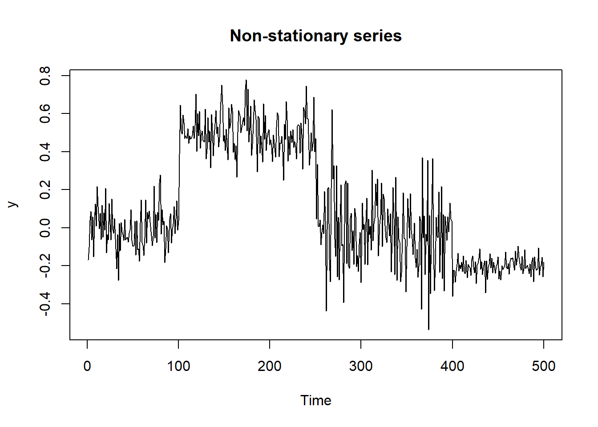
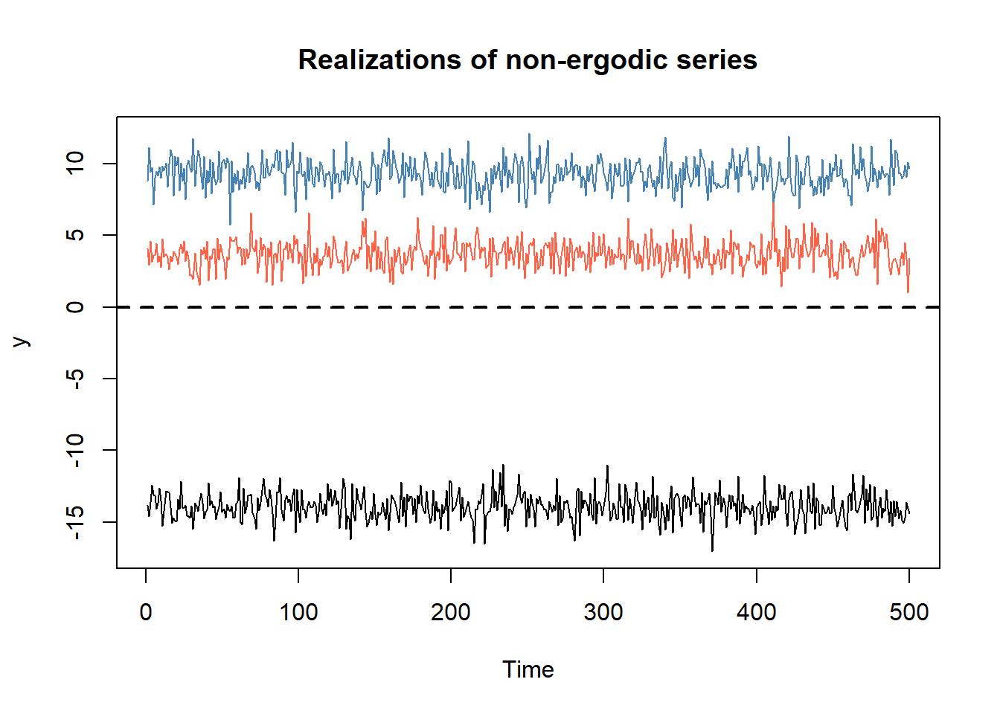
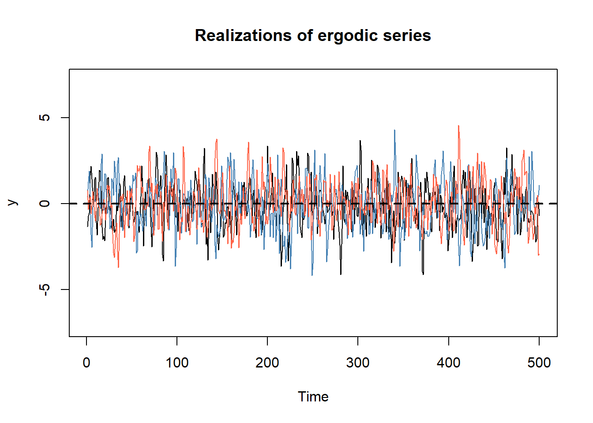
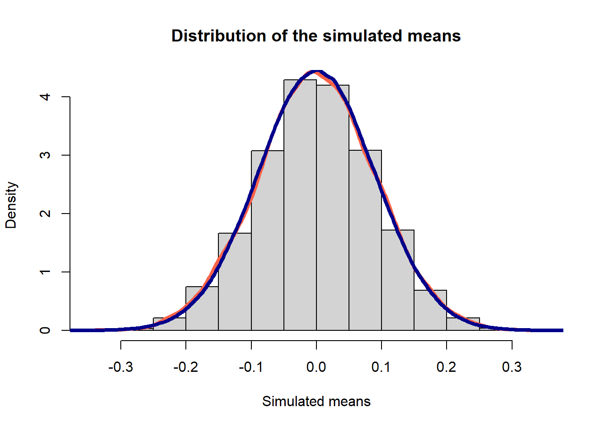
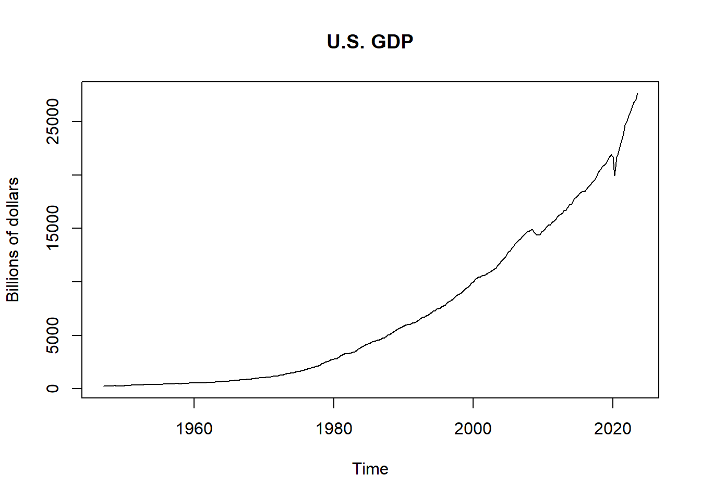
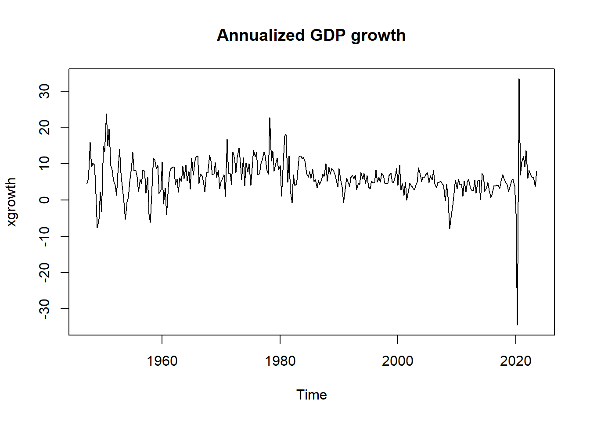
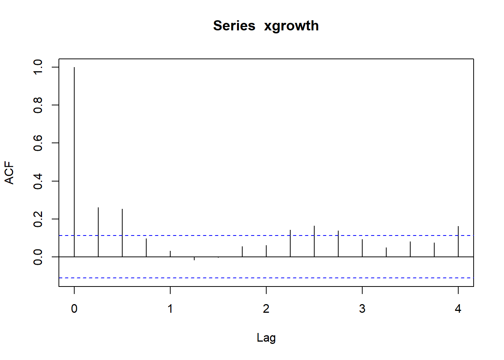
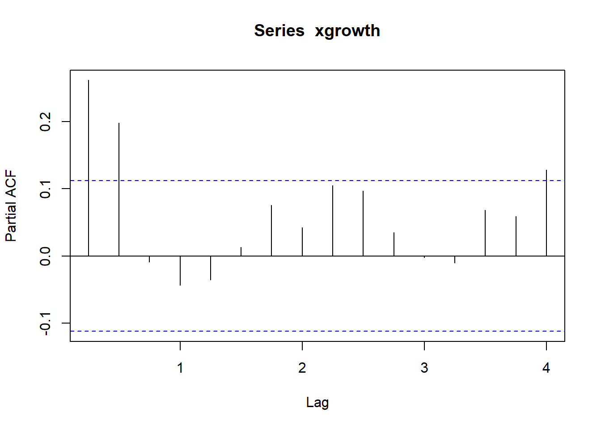
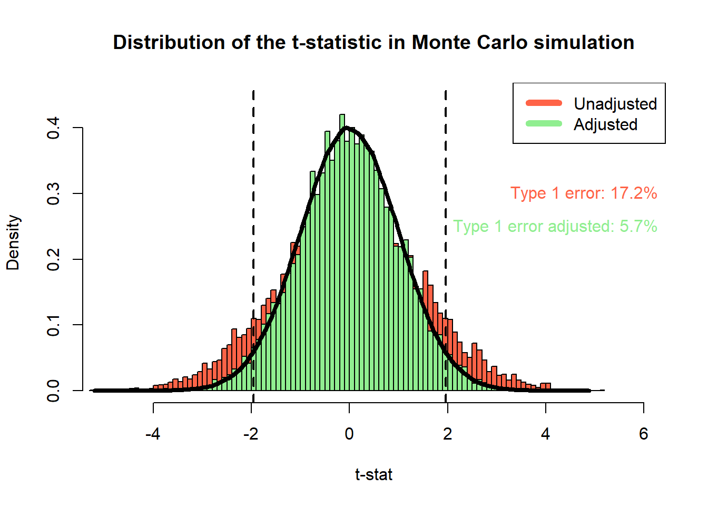

Session 1 Introduction to time series
1.1 Stochastic processes and dependence
Stochastic processes allow for dependence in consecutive random variables \(\{\dots, Y_{-2}, Y_{-1}, Y_{0}, Y_{1}, Y_{2} \dots\}\). However, in practice, when we observe an empirical time series we are considering one, truncated realization of the stochastic process \(\{y_1, y_2, \dots, y_T\}\). As it is easy to imagine, this can cause some issues in studying the properties of an empirical time series. First, because we can only study the finite dimensional distribution of the process. Second, because our task is to learn something about the process using a single realization.
To overcome this limitations we need assumptions. In particular, two common assumptions in time series analysis are, loosely speaking:
stationarity: the observed values in the sequence come from the same distribution, so that it is possible to learn from the past observations and to generalize the results to the entire, infinite stochastic process
ergodicity: values observed far away in time can be considered as independent, so that the sufficiently long series can be considered as a representative sample of the underlying distribution
Under these (or similar) assumptions, we can use the observations within a single observed time series to learn the parameters of our models.
Stationarity
## Example 1: non-stationary series
# simulation
t_max <- 500
y <- rep(NA, t_max)
for (t in 1:t_max) {
if (t<=100) {
y[t] <- rnorm(1, mean = 0, sd = 0.1)
}
if (t>100 & t<=250) {
y[t] <- rnorm(1, mean = 0.5, sd = 0.1)
}
if (t>250 & t<=400) {
y[t] <- rnorm(1, mean = 0, sd = 0.2)
}
if (t>400 & t<=t_max) {
y[t] <- rnorm(1, mean = -0.2, sd = 0.05)
}
}
# plot
plot.ts(y, main = "Non-stationary series")
Ergodicity
This examples shows how the assumptions of stationarity and ergodicity allow to learn the parameters of the distribution of the stochastic process from an empirical time series.
Let \(\{z_t\}_{t = 1}^{T} \stackrel{iid}{\sim} \mathcal{N}(0, 1)\)
\[ \begin{aligned} y_t &= U_0 + 0.25z_t, \quad U_0 \sim \mathcal{N}(0, 10) \\ x_t &= z_t + z_{t-1} \end{aligned} \] We have: \[ \mathbb{E}[y_t] = \mathbb{E}[x_t] = 0 \] \[ \begin{aligned} \text{cov}(y_t, y_{t-1}) &= \begin{cases} 1+0.25^2 & h = 0 \\ 1 & h \neq 0 \end{cases} \\[1em] \text{cov}(x_t, x_{t-1}) &= \begin{cases} 2 & h = 0 \\ 1 & h = 1 \\ 0 & h \geq 2 \end{cases} \end{aligned} \]
## Example 2: weak dependence
# initialize object to store result
nsim <- 3
y_list <- matrix(rep(NA, nsim*t_max), nrow = t_max, ncol = nsim)
# simulation
for (sim in 1:nsim) {
set.seed(sim+123)
U0 <- rnorm(1, sd = 10)
z <- rnorm(t_max)
y_list[,sim] <- U0 + z
}
# plot
plot.ts(y_list[,1], ylim = c(min(y_list), max(y_list)), main = "Realizations of non-ergodic series", ylab = "y")
lines(y_list[,2], col = "steelblue")
lines(y_list[,3], col = "tomato")
abline(h = 0, col = "black", lwd = 2, lty = 2)
# initialize object to store result
nsim <- 10000
x_list <- matrix(rep(NA, nsim*t_max), nrow = t_max, ncol = nsim)
# simulation
for (sim in 1:nsim) {
set.seed(sim+123)
z <- rnorm(t_max+1)
x_list[,sim] <- z[2:(t_max+1)] + z[1:t_max]
}
# plot
plot.ts(x_list[,1], ylim = c(min(x_list), max(x_list)), main = "Realizations of ergodic series", ylab = "y")
lines(x_list[,2], col = "steelblue")
lines(x_list[,3], col = "tomato")
abline(h = 0, col = "black", lwd = 2, lty = 2)
1.2 Asymptotic results
The problem with the series \(\{y_t\}\) in the previous example is that the autocovariance function does not decay. Loosely speaking, the series gets stuck in the trajectory given by the initial draw of \(U_0\) and does not revert to the true mean of the stochastic process. The main consequence is that we cannot learn the mean of the process by taking the average of the observations in a given time series.
The fact that some conditions about the decay of the autocovariance are required to recover the mean of the process is true in general. For example, the Law of Large Numbers (LLN) guarantees that the sample mean converges in probability to the true mean under the assumption that the autocovariances are absolutely summable:
\[ \sum_{k=0}^\infty |\gamma_k| < \infty \]
Notice that in the case of \(\{y_t\}\) above instead \(\sum_{k=0}^\infty |\gamma_k| = \infty\). On the contrary, \(\{x_t\}\) satisfies both the conditions of the LLN and of the Central Limit Theorem (CLT). The condition for the latter is that \(\{\phi_k\}_{k=0}^\infty\) is absolutely summable in \(x_t = \mu + \sum_{k=0}^\infty\phi_k z_{t-k} = z_t + z_{t-1}\), which is trivially verified. Therefore, since \(\mu_x = 0\),
\[ \sqrt{T} \ \bar{x}_T \ \xrightarrow{d} \ \mathcal{N}(0, \sigma^2_{LR}), \]
with \(\sigma^2_{LR} = \sum_{k=-\infty}^\infty \gamma_k = \text{Var}(x_t) + 2\sum_{k=1}^\infty \gamma_k\).
## Example 3: central limit theorem
x_empirical <- x_list[,9]
x_means <- colMeans(x_list)
x_theory_variance <- 4/t_max
rbind(empirical_variance = var(x_empirical) + 2*(cov(x_empirical[1:(t_max-1)], x_empirical[2:t_max])),
simulated_variance = var(x_means*sqrt(t_max)),
theoretical_variance = x_theory_variance*t_max)## [,1]
## empirical_variance 4.174614
## simulated_variance 4.050667
## theoretical_variance 4.000000## Plot empirical distribution VS. theoretical distribution
hist(x_means, breaks = 20, freq = FALSE,
main = "Distribution of the simulated means",
xlab = "Simulated means")
lines(density(x_means), lwd = 4, col = "tomato")
lines(density(rnorm(1e6, mean = 0, sd = sqrt(x_theory_variance))), lwd = 4, col = "darkblue")
1.3 Empirical moments and summary statistics
For this example we use the .
x <- read.csv("../us-gdp.csv")[,2]
x <- ts(x, start = c(1947, 1), frequency = 4)
t_max <- length(x)
plot.ts(x, main = "U.S. GDP", ylab = "Billions of dollars") We consider the annualized quarterly growth rates:
# xgrowth <- ( (x[2:t_max]/x[1:(t_max-1)])^4 - 1 )*100
xgrowth <- 4*diff(log(x))*100
xgrowth <- ts(xgrowth, start = c(1947, 2), frequency = 4)
plot.ts(xgrowth, main = "Annualized GDP growth")
## Example 4: empirical moments and summary statistics of the GDP growth
library(moments)
rbind(
mean = mean(xgrowth),
variance = var(xgrowth),
skewness = skewness(xgrowth),
kurtosis = kurtosis(xgrowth),
min = min(xgrowth),
max = max(xgrowth),
above_5 = mean(xgrowth > 5),
annualized_volatility = sqrt(4)*sd(xgrowth)
)## [,1]
## mean 6.1858847
## variance 26.5117326
## skewness -0.9793909
## kurtosis 17.9597257
## min -34.4929551
## max 33.4065902
## above_5 0.6078431
## annualized_volatility 10.2979090## Autocovariance function
gamma <- function(x, k) {
k <- abs(k)
t_max <- length(x)
# (t_max-k)/t_max * cov(x[1:(length(x)-k)], x[(k+1):length(x)]) # for compatibility with acf()
cov(x[1:(t_max-k)], x[(k+1):t_max])
}
## Autocorrelation
rho <- function(x, k) {gamma(x, k) / gamma(x, 0)}
## autocorrelation at different lags
sapply(0:12, rho, x = xgrowth)## [1] 1.000000000 0.262228567 0.254514380 0.097922439 0.030475252
## [6] -0.016390183 -0.003186283 0.054980002 0.062358818 0.146571003
## [11] 0.169620140 0.143289793 0.096325249Under the null hypothesis \(H_0: \rho = 0\), the sample autocorrelation is distributed as \[ \sqrt{T} \ \hat{\rho} \xrightarrow{d} \mathcal{N}(0, 1) \]
This means that the asymptotic variance of the estimator under the null is \(1/T\). The plot reports the 95% confidence interval obtained as \(\left(0 \pm \frac{z_{0.975}}{\sqrt{T}}\right)\).


1.4 Hypothesis testing
In this section we use three testing procedures on the GDP growth data: the Augmented Dickey-Fuller test for stationarity, the Jarque-Bera test for normality and the t-test for the mean of a process.
## Example 5: tests on GDP growth rates
library(tseries)
## stationarity: augmented Dickey-Fuller
adf.test(x)##
## Augmented Dickey-Fuller Test
##
## data: x
## Dickey-Fuller = 2.4611, Lag order = 6, p-value = 0.99
## alternative hypothesis: stationary##
## Augmented Dickey-Fuller Test
##
## data: xgrowth
## Dickey-Fuller = -5.9064, Lag order = 6, p-value = 0.01
## alternative hypothesis: stationary##
## Jarque Bera Test
##
## data: xgrowth
## X-squared = 2902.3, df = 2, p-value < 2.2e-16## mean zero: z-test
sigmaLR <- sum(sapply(-100:100, gamma, x = xgrowth))
t_stat <- mean(xgrowth)/(sqrt(sigmaLR/t_max))
p_value <- (1-pnorm(abs(t_stat)))*2
# t.test(xgrowth, mu = 0)
# mean(xgrowth)/(sqrt((t_max/(t_max-1))*var(xgrowth)/t_max)) # for compatibility with t-test()
t_stat_unadjasted <- mean(xgrowth)/(sqrt(var(xgrowth)/t_max))
p_value_unadjasted <- (1-pnorm(abs(t_stat_unadjasted)))*2
rbind(p_value_unadjasted = p_value_unadjasted,
p_value = p_value)## [,1]
## p_value_unadjasted 0.000000e+00
## p_value 4.884981e-15# We can study when adjustment really matters using the results of the previous
# Monte Carlo simulation
ybar <- colMeans(x_list)
sigma <- apply(x_list, 2, function(x) sqrt(gamma(x, k = 0)/length(x)))
sigmaLR <- apply(x_list, 2, function(x) sqrt(sum(sapply(-3:3, gamma, x = x))/length(x)))
t_stat <- ybar/sigma
t_stat_adjusted <- ybar/sigmaLR
type1error <- mean(abs(t_stat) > qnorm(0.975))
type1error_adj <- mean(abs(t_stat_adjusted) > qnorm(0.975))# distributions
hist(t_stat, breaks = 100, freq = FALSE, col = "tomato",
ylim = c(0, 0.45), xlim = c(-5, 6), xlab = "t-stat",
main = "Distribution of the t-statistic in Monte Carlo simulation")
hist(t_stat_adjusted, breaks = 100, freq = FALSE, add = TRUE, col = "lightgreen")
lines(density(rnorm(1e6, mean = 0, sd = 1)), lwd = 4, col = "black")
legend("topright", c("Unadjusted", "Adjusted"), col=c("tomato", "lightgreen"), lwd=6)
abline(v = qnorm(c(0.025, 0.975)), lty = 2, lwd = 2)
text(x=c(6.5, 6.5), y=c(0.3, 0.25),
labels=c(paste0("Type 1 error: ", round(type1error*100, 1), "%"),
paste0("Type 1 error adjusted: ", round(type1error_adj*100, 1), "%")),
col=c("tomato", "lightgreen"), pos = 2)